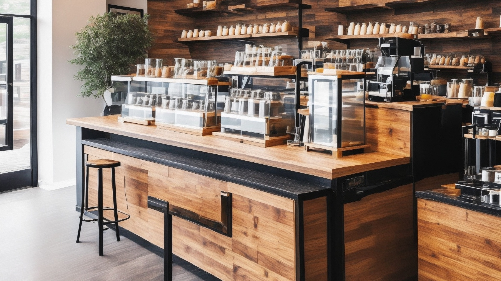

Welcome to The Crafter's Cup
Come enjoy our expertly-crafted beverage menu and delicate pastries at The Crafter's Cup
About Us
Our Beliefs
- At The Crafter's Cup, we firmly believe that a great cup of coffee has the power to awaken the senses, inspire connections, and brighten someone's day.
- We hold the belief that coffee should be a source of comfort, indulgence, and a catalyst for meaningful interactions.
- Our philosophy centers around sourcing the finest coffee beans and meticulously crafting each cup to deliver an exceptional experience to our customers.

Our Work Ethics
- Our team demonstrates a strong work ethic, fueled by passion, commitment, and a genuine love for coffee.
- We prioritize exceptional customer service, going above and beyond to ensure every customer leaves our coffee restaurant satisfied and delighted.
- Diligence, precision, and attention to detail are the cornerstones of our work ethics, ensuring consistent quality in every cup we serve.
Our Future Goals
- Looking ahead, our primary goal is to establish ourselves as the go-to coffee destination in Subiaco, renowned for our outstanding brews and welcoming atmosphere.
- We aspire to expand our offerings and introduce a wider range of specialty coffees, appealing to the diverse tastes of our customers.
- Building a vibrant coffee community in Subiaco is part of our future vision, achieved through hosting events, workshops, and fostering a warm, inclusive environment for coffee enthusiasts. In the future, we want to have big and larger event attracting more people to experience the joy of our brewing together.

08392759275

thecrafterscup1@gmail.com
The Crafter's Cup Australia Pty Ltd
375 Hay St, Perth Western Australia 6008
Open 7am - 10pm Mon-Sun
Copyright The Crafter's Cup 2023. All rights reserved

Copyright The Crafter's Cup 2023. All rights reserved